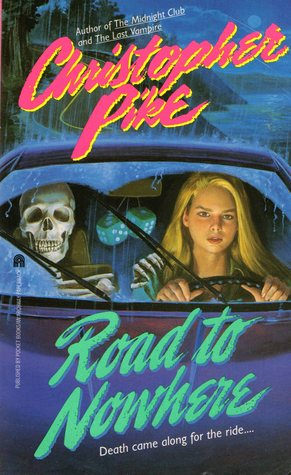

ROAD TO NOWHERE - CHRISTOPHER PIKE
Book Reviews ; 23th of June, 2019
Teresa Chafey is running away from home. Driving north along the California coast, she picks up two mysterious hitchhikers: Poppy Corn and Freedom Jack. Together the three of them tell stories: Teresa of her devastating relationship with her boyfriend, Poppy of a sad young woman she once knew, and Freedom of a talented young man with a violent temper. Yet as they talk, a darker story unfolds around them. A story of life and death, of redemption and damnation. It will be the longest night of Teresa's life. Maybe the last night of her life.
SATI - CHRISTOPHER PIKE
Book Reviews ; 20th of June, 2019

The first adult novel from a bestselling author of young adult fiction. Michael picks up a young hitch-hiker in the Arizona desert, bringing her home and letting her sleep on his couch. The next day, she talks about being God and strange things begin to happen to everyone coming in contact with her.
"I once knew this girl who thought she was God. She didn't give sight to the blind or raise the dead. She didn't even teach anything, not really, and she never told me anything I probably didn't already know. SATI, on the other hand, she didn't expect to be worshipped, nor did she ask for money.
Given her high opinion of herself, some might call that a miracle."